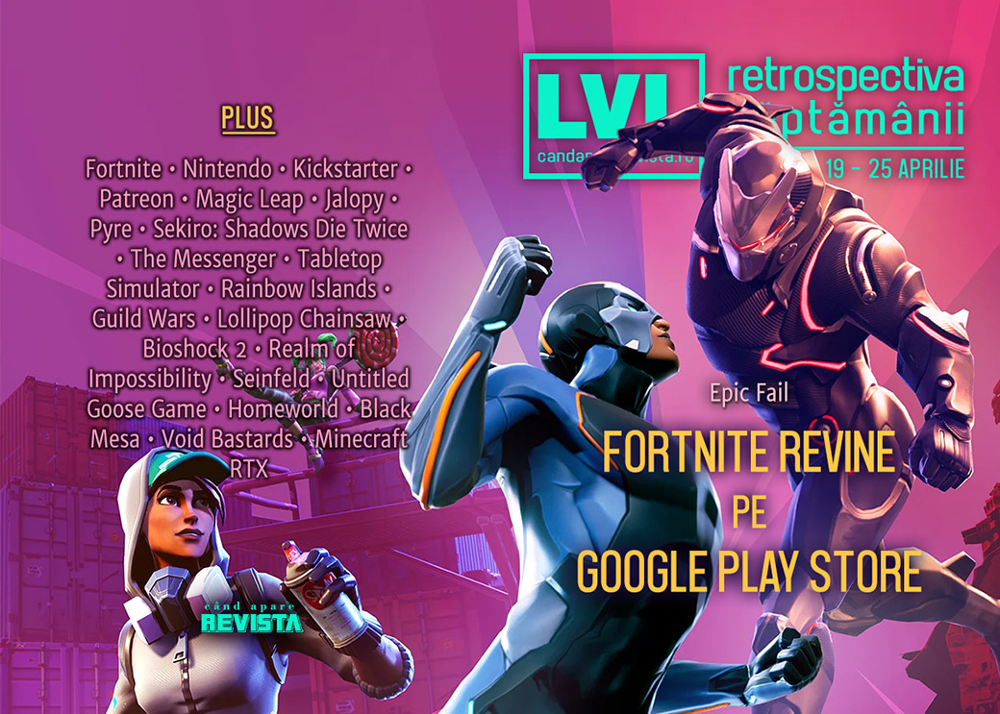

Retrospectiva săptămânii 19 - 25 aprilie 2020
Fortnite e din nou pe Google Play Store, în ciuda luptei împotriva comisionului de 30% din industrie, viitorul Xbox are și un logo nou, Kickstarter are tot mai puține proiecte noi, Steam are o ediție nouă a festivalului LudoNarraCon dedicat jocurilor bazate în principal pe poveste și avem și niște anunțuri interesante de jocuri: un RTT bazat pe serialul Peaky Blinders și un nou joc Tintin.
Linkuri rapide:

Știri
- După 18 luni în care a distribuit pe cont propriu versiunea de Android a Fortnite, Epic Games cedează și aduce jocul înapoi pe Play Store (acceptând deci să plătească și comisionul de 30% pe care-l percepe Google). (Ars Technica, Kotaku, PC Gamer, GamesIndustry.biz, Gamasutra)
- Probleme pentru compania Magic Leap, nevoită să concedieze aproape jumătate din personal. (GameDaily.biz, Variety, GamesIndustry.biz)
- La fel și pentru Patreon, care își reduce numărul angajaților cu 13%, în ciuda încasărilor mai mari. (TechCrunch, TechSpot)
- Iar Kickstarter se confruntă cu o scădere de 35% a proiectelor noi pe platformă și, cel mai probabil, se pregătește de concedieri. (PCGamesInsider.biz, Game World Observer)
- Xbox Series X are un logo nou, care, deși brevetat, nu a fost încă anunțat oficial de Microsoft. (Destructoid, Eurogamer, GamesRadar+)
Articole (critică, dev, design)
- How video games consistently fail Gandhi (RPS)
- Reviewing the Concept of Professional Reviews (Gamasutra)
- Why Video Game Rivalries Can be Beautiful (USgamer)
- How A Niche Dev Community Is Improving Self-Isolation (Gamespot)
- Burnt out by abuse over a game he didn’t make, the creator of Jalopy is trying to move on (Eurogamer)
Not-a-review
- Supergiant’s Pyre Is Built Around the Strongest Game Mechanic of All: Choice (Escapist)
- ‘Sekiro’ Is an Endlessly Frustrating but Uniquely Gratifying Experience (The Ringer)
- The Messenger (DEEP HELL)
- Tabletop Simulator Isn't Perfect, but It's Keeping My Board Game Night Alive (USgamer)
Industrie
- Epic’s crusade against 30% takes a tumble (GamesIndustry.biz)
- The uncertain, unflinching future of games media (GamesIndustry.biz)
- LudoNarraCon is proof that the future of gaming conventions is to go digital (PC Gamer)
- Physical events are in doubt for 2020 – it’s time to dive into digital (GamesIndustry.biz)
- How Blizzard, Ubisoft, and other studios went remote in the time of COVID-19 (Gamasutra)
- The DeanBeat: Digital gaming events aren’t easy, but they may be the future (VentureBeat)
- Coronavirus leads to 35% growth for the video games industry (GameDaily.biz)
Istorie, retrospectivă
- 1987’s Rainbow Islands boasts more great ideas than most modern platform games (RPS)
- Stare Into The Scrying Pool – A Guild Wars 15th Anniversary Developer Interview (GameSpace)
- Member Lollipop Chainsaw? (Hardcore Gamer)
- BioShock 2 Is the Best BioShock (Escapist)
- Realm of Impossibility (The Obscuritory)
- The Video Games About Nothing (Kotaku)
- The Game Archaeologist: The history of play-by-email games (Massively OP)
Dev, making of, mecanici
- How Untitled Goose Game made a game out of everyday items (RPS)
- An extended interview with Homeworld designer Rob Cunningham (Ars Technica)
- Black Mesa project lead Adam Engels on Half-Life, remote work, and game design philosophy (Game World Observer)
- Video: The origin story of Void Bastards ‘ striking art style (Gamasutra)
- From kazoos to trash cans, how animal sounds are made in games (PC Gamer)
- The legacy of fy_iceworld, Counter-Strike’s divisive and hugely popular custom map (RPS)
- Who made fy_iceworld? A forensic investigation (RPS)
- (video) Minecraft RTX Deep Dive: How Nvidia Delivered A Game-Changing Ray Tracing Upgrade (YouTube DigitalFoundry)
Design, world-building, artă
Anunţuri şi lansări de jocuri
Anunţate
- Autopsy Simulator (păi de ce nu?) (PC Gamer)
- Peaky Blinders: Mastermind, un RTT ce servește drept prequel serialului (Destructoid)
- Paradise Killer (Kotaku)
- Minimal Affect (go4games.ro)
Acum cu dată de lansare
- Wildfire: 26 mai (Escapist)
- Beyond Blue: 8 iunie (DSOGaming)
- Desperados 3: 16 iunie (Eurogamer)
- Hardspace: Shipbreaker: 16 iunie (early access) (PC Gamer)
- Trackmania Nations Remake: 1 iulie (DSOGaming)
- Windbound: 28 august (GameSpace)
Amânate
- Death Stranding (PC): 14 iulie în loc de 2 iunie (Eurogamer)
Lansate
- 21 aprilie: The Shattering (Steam, gog.com)
- 21 aprilie: Help Will Come Tomorrow (Steam, gog.com)
- 21 aprilie: The Flower Collectors (Steam, gog.com)
- 22 aprilie: ITTA (Steam, gog.com)
- 23 aprilie: Cloudpunk (Steam)
- 23 aprilie: Filament (Steam, gog.com)
- 23 aprilie: Iratus: Lord of the Dead (iese din early access) (Steam)
- 24 aprilie: Trials of Mana (Steam)
- 24 aprilie: XCOM: Chimera Squad (Steam)
- 24 aprilie: Predator: Hunting Grounds (Epic Store)
Prăvălii de jocuri
Știri
- Story game celebration LudoNarraCon kicks off today (RPS)
- Steam upgrades its search functionality with Query Expansion (GameDaily.biz)
- Google abandons Stadia Base branding as it launches free tier (GamesIndustry.biz)
Articole
- With its free service, Stadia is starting to make sense (Eurogamer)
- Steam Gets ‘Editorial’ When We Weren’t Looking (Gamasutra)
Update catalog
- GeForce Now suffers further publisher exits including Xbox Game Studios (VideoGamesChronicle)
- Ubisoft, Epic and Bungie among companies bringing games to GeForce Now (PCGamesInsider.biz)
- Red Dead Redemption 2 replacing GTA 5 on Xbox Game Pass (Eurogamer)
Jocuri gratis și free weekends
- Play Call of Duty Modern Warfare multiplayer free this weekend (VideoGamesChronicle)
- Pac-Man Championship Edition 2 is free until May 10 (Polygon)
- XCOM 2 is free to play on Xbox & Steam for a week through 2K’s Give Back Project (Shacknews)
- Sega is giving away Total War: Shogun 2 (VideoGamesChronicle)
- For The King is currently free on PC (EGM)
- Brave Project Winter’s sub-zero subterfuge for free all weekend (RPS)
Reduceri și promoții
- Best PC gaming deals of the week – 24th April 2020 (RPS)
- Weekend PC Download Deals for Apr. 24: Borderlands Steam sale (Shacknews)
- Weekend Console Download Deals for Apr. 24: PlayStation is Big in Japan (Shacknews)
Retrospectiva săptămânii este rubrica duminicală în care trecem în revistă evenimentele săptămânii de pe frontul de gaming: știri şi articole (scrise de alții, bineînțeles, că e mai ușor aşa), industrie, lansări, oferte de jocuri, toate numai de savurat la cafeaua de duminică dimineața.
De asemenea, rubrica e deschisă oricui vrea și poate contribui. Dacă ai citit vreun articol sau vreo știre interesantă și crezi că merită incluse în retrospectiva săptămânii, te așteptăm pe forum pe unul dintre topicurile dedicate: Știri, Articole, Gaming România].